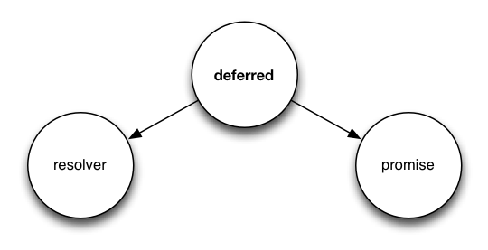

Asynchronous JavaScript
Why asynchronous ?
Client-side
One obvious use case:
Talking to remote instances (Ajax)
We're doing it asynchronous as we don't want to block interaction with the page
Programming Ajax doesn't cause much trouble
Server-side
It may not be obvious but server-side we can benefit from asynchronicity in many more cases
and server-side shows that asynchronous programming can be difficult
So we should be asking ...
Why asynchronous on server-side ?
It's about querying external resources
Many web applications have code like this:
var result = db.query("select * from T");
// use resultWhat is the software doing while it queries the database ?
In many cases, just waiting for the response
How much waiting can cost ?
I/O latency:
- L1: 3 cycles
- L2: 14 cycles
- RAM: 250 cycles
- DISK: 41,000,000 cycles
- NETWORK: 240,000,000 cycles
Better software can multitask
Code like this:
var result = db.query("select * from T");
// use resultblocks entire process
But code like this:
db.query("select..", function (result) {
// use result
});Allows the program to return to the event loop immediately.
This is how I/O should be done, and this is what was introduced with Node.js
For more details on that see:
How to write asynchronous code ?
Node.js introduced the following convention:
readFile(filename, function (err, content) {
if (err) {
// handle error
return;
}
// process file content
});Currently this style has also its recommendation in:
Let's do a simple real world exercise
Concatenate all js files in given directory to lib.js file
Thinking synchronous it may look like this:
writeFile(dirname + '/lib.js',
// Read all filenames
readdir(dirname) // returns array of filenames
// Filter *.js filenames
.filter(function (filename) {
return (filename.slice(-3) === '.js')
&& (filename !== 'lib.js');
})
// Read content of each file
.map(readFile)
// Concatenate into one string
.join("\n")
);Let's do it asynchronous in Node.js
// Read all filenames in given path
readdir(dirname, function (err, filenames) {
var result, waiting;
if (err) {
// Handle eventual error
return;
}
// Filter *.js filenames
filenames = files.filter(function (filename) {
return (filename.slice(-3) === '.js') && (filename !== 'lib.js');
});
// Read content of each file
waiting = 0;
result = [];
filenames.forEach(function (filename, index) {
++waiting;
readFile(filename, 'utf8', function (err, content) {
if (err) {
// Handle eventual error
return;
}
result[index] = content;
if (!--waiting) {
// Got content of all files, concatenate and write into lib.js
writeFile(dirname + '/lib.js', result.join("\n"), function (err) {
if (err) {
// Handle eventual error
return;
}
});
}
});
});
});Looks definitely more complicated
it's still a simple example, real world cases are usually more complicated than that
Many developers have reached this point and as a result we have many solutions that aim to be remedy for asynchronous programming
Most popular solutions:
- Async - github.com/caolan/async
- Step - github.com/creationix/step
- Q (promises) - github.com/kriskowal/q
- Seq - github.com/substack/node-seq
- Futures (promises alike) - github.com/coolaj86/futures
- ...
- deferred (promises) - github.com/medikoo/deferred
Most solutions just try to simplify callbacks, but it still forces us into continuation passing style
It can be done better than that
Instead of encapsulating waiting state within one function call, we can return such state as an object
With the deferred/promise approach an asynchronous function returns a promise object, which is a promise of a value to be obtained
Promise can be processed by many functions.
It can be chained to other promises or nested with further promise values
With promises we receive a much more powerful abstraction of asynchronous programming
Deferred / Promise
What is Deferred ?
Deferred holds both resolver and promise objects

Observers interested in value are attached to promise object
With resolver we resolve promise with actual value
In some other implementations of deferred there is no distinction between deferred and a promise, it's the same object. In Q and deferred it's different
In common usage promise is returned to the world and resolver is kept internally
Example
delay function decorator. Decorates function so its execution is delayed in time
var delay = function (fn, timeout) {
return function () {
var def = deferred(), self = this, args = arguments;
setTimeout(function () {
def.resolve(fn.apply(self, args));
}, timeout);
return def.promise;
};
};
var delayedAdd = delay(function (a, b) {
return a + b;
}, 100);
var result = delayedAdd(2, 3);
deferred.isPromise(result); // true
result.then(function (value) {
// Invoked after 100 milliseconds
console.log(value); // 5
});What is a Promise ?
... ok, maybe let's try plain English ;)
Promise is an object that represents eventual value which may already be available or is expected to be available in a future.
Promise may succeed (fulfillment) or fail (rejection)
Promise can be resolved only once
Attaching observers
promise.then(onsuccess, onerror);Both callbacks are optional. You can provide either onsucess or onerror
Callbacks are called only once (only either onsuccess or onerror is called)
In deferred implementation promise equals promise.then function, so you may use promise directly:
console.log(promise === promise.then); // true
promise(onsuccess, onerror);Chaining promises
Promises by nature can be chained
promise function returns another promise which is resolved with a value returned by a callback function:
delayedAdd(2, 3).then(function (result) {
// result === 5
return result*result;
}).then(function (result) {
console.log(result); // 25
});If no callback for given flow (success or error) was given, then promise is resolved with input value:
delayedAdd(2, 3).then(null, function (err) {
// handle eventual error
}).then(function (result) {
console.log(result); // 5
});In deferred implementation instead of callbacks you can also pass promise values to promise:
promise3 = promise1.then(promise2);
// or:
promise3 = promise1(promise2);
// promise3 is resolved with the value of promise2 ...
// ... when both promise1 and promise2 are resolvedNesting promises
If a promise is resolved with another promise, it's not really resolved. Promise is resolved only when the final promise is resolved with a real value:
var def = deferred();
def.resolve(delayedAdd(2, 3));
def.promise.then(function (result) {
console.log(5); // 5;
});Error handling
Errors in promises are handled in a separate flow
A promise resolved with an error (rejected) propagates its error to all promises that depend on this promise (e.g. promises initiated by adding observers)
var error = new Error("Error");
promise.then(function () {
// success flow
throw error; // caught by promise implementation
}).then(function () {
// never called
}).then(function () {
// never called
}, function (e) {
console.log(e === error); // true
// handle error
});Problem with then is that any unhandled errors remain silent
To expose them, be sure to end promise chain with .done():
promise(function () {
throw new Error("Error"); // caught
}).then(function () {
// never called
}).done(); // Error is thrownIt's very important to end promise chains with done otherwise eventual errors that were not handled will not be exposed
done shares same signature as then, so you can handle errors in callbacks provided to done
done as it ends the chain, obviously doesn't return any promise
promise(function () {
// ...
}).done(null, function(err) {
// handle error
});Working with Node.js callback style functions
It's not convienient to work with both promises and callback style functions
When you decide to build your flow with promises don't mix both concepts just promisify asynchronous functions so they return promises instead.
Do that with deferred.promisify:
var readFile = deferred.promisify(fs.readFile);
readFile(filename, 'utf-8').done(function (content) {
// process content
});deferred.promisify also takes care of input arguments. It makes sure that all arguments that are to be passed to asynchronous function are first resolved.
So we can write constructs like this:
var readFile = deferred.promisify(fs.readFile)
, writeFile = deferred.promisify(fs.writeFile);
writeFile(filename + '.copy',
readFile(filename, 'utf-8')).done();but keep in mind it's not best real world example, don't copy files that way, use fs.createReadStream instead
Grouping promises
Sometimes we're interested in results of more than one promise object
We can help us again with a deferred function:
deferred(delayedAdd(2, 3), delayedAdd(3, 5),delayedAdd(1, 7))
.done(function (result) {
console.log(result); // [5, 8, 8]
});Processing collections
There is promise aware Array's map:
deferred.map(filenames, readFile)(function (result) {
// result is an array of files content
});If any call of readFile ends with an error, then promise returned by deferred.map is immediately rejected with that error
There's also promise aware Array's reduce:
deferred.reduce([delayedAdd(2, 3), delayedAdd(3, 5), delayedAdd(1, 7)],
function (a, b) {
return delayedAdd(a, b);
}).done(function (result) {
console.log(result); // 21
});Promise extensions
In deferred promises are equipped with some useful extensions:
map & reduce
Promise aware Array's methods that would be executed on resolved value
readdir(directory).map(readFile).done(function (result) {
// result is an array of directory files content
});invoke
Invokes function (with pregiven arguments) on resolved value.
promise = deferred({ foo: function (arg) { return arg*arg }});
promise.invoke('foo', 3).done(function (result) {
console.log(result); // 9
});It works also with asynchronous functions:
promise = deferred({ foo: function (arg, callback) {
setTimeout(function () {
callback(null, arg*arg);
}, 100);
} });
promise.invoke('foo', 3).done(function (result) {
console.log(result); // 9
});match
Matches resolved list into function arguments
var promise = deferred([2, 3]);
promise.match(function (a, b) {
console.log(a + b); // 5
}).done();For more extensions see documentation at github.com/medikoo/deferred
You can also freely extend deferred with your own extensions
We've been introduced to promises. Let's look back at our Node.js example
With promises we can write it nearly same way as wrote it initially:
writeFile(dirname + '/lib.js',
// Read all filenames in given path
readdir(dirname)
// Filter *.js filenames
.invoke('filter', function (filename) {
return (filename.slice(-3) === '.js')
&& (filename !== 'lib.js');
})
// Read content of each file
.map(function (filename) {
return readFile(filename, 'utf-8');
})
// Concatenate into one string
.invoke('join', '\n')
).done(); // Expose eventual errorWhat future standards have to offer ?
Currently there are no plans for promise implementation in Harmony
What's interesting we can find promises in Dart
However its API is not as versatile and largly differs form what was introduced here
- Instead of two possible resolution states there are three: completed, cancelled & failed
- You need to use three different methods to attach observers
- If promise is resolved with another promise, you need to run
flattento get final real value - Different approach to grouping promises (join and waitFor methods)
See Dart spec for more info on that: http://api.dartlang.org/dart_core/Promise.html
Let's see what real future has to offer...
Harmony
There are no promises but is there anything else that can help us with asynchronous programming ?
Coroutines
They would help with callback style, as instead of:
readFile(filename, function (err, content) {
// ..
});It would be possible to keep flow in current scope:
[err, content] = yield readFile(filename);
if (err) {
// handle error
return;
}
// process contentThis however won't work well with promises
(what about error path?)
Proxies
Proxies are very powerful
With proxies we can proxy property names onto resolved promise values
So instead of:
promise.invoke('foo', arg);We would be able to write:
promise.foo(arg);With internal support from promise implementation this would work
Let's improve our example with proxies.
It's basically same as our first "synchronous" version:
writeFile(dirname + '/lib.js',
// Read all filenames in given path
readdir(dirname)
// Filter *.js filenames
.filter(function (filename) {
return (filename.slice(-3) === '.js')
&& (filename !== 'lib.js');
})
// Read content of each file
.map(function (filename) {
return readFile(filename, 'utf-8');
})
// Concatenate into one string
.join('\n')
).done(); // Expose eventual error;Questions ?
 @medikoo
@medikoo github.com/medikoo
github.com/medikooUse a spacebar or arrow keys to navigate